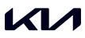
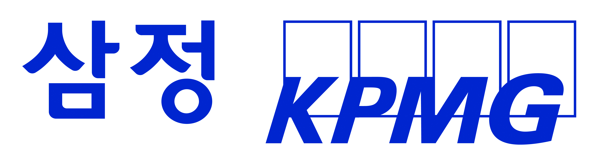
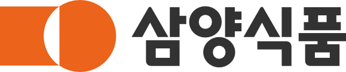
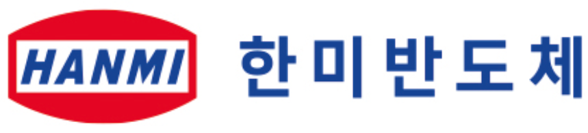
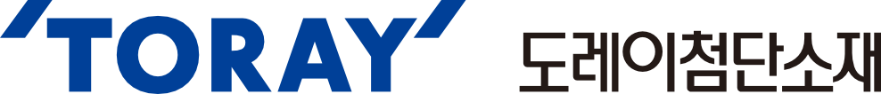
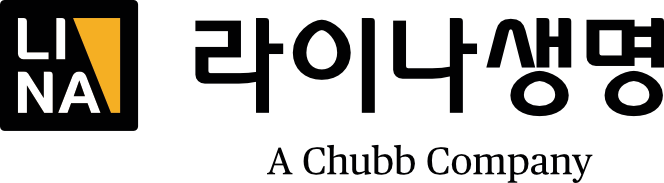
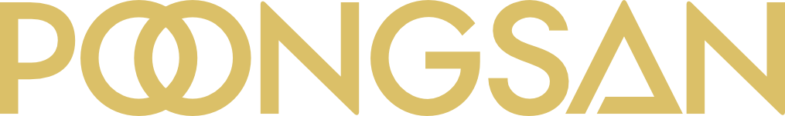

in Story & News
회원사
Headline
한진그룹
창립 80주년 맞아 ‘VISION 2045’ 선포 새로운 100년 향해 전진
지난 10월, 한진그룹이 창립 80주년을 맞아 그동안의 성과를 돌아보고, 미래 비전을 선포하는 기념 행사를 개최했다. 1945년 한진상사로 출범해 대한민국 물류 산업 발전을 이끌어온 한진그룹은 ‘수송을 통해 국가 발전에 기여한다’는 수송보국(輸送報國)의 창업정신을 바탕으로 항공과 물류를 대표하는 글로벌 기업으로 성장했다.
기념식에서 조원태 한진그룹 회장은 고객의 신뢰와 임직원의 헌신이 오늘의 성장을 이끈 원동력이라고 강조하며 감사 인사를 전했다.
조현민 한진그룹 사장은 이날 ‘Mo-ving the world to a better future’라는 그룹 비전과, 장기 비전인 ‘그룹 VISION 2045’를 발표했다. ▲항공우주·미래모빌리티·이커머스분야를 아우르는 종합 모빌리티 기업으로 도약 ▲AI 기반 Hyper-Autonomous Logi-Tech(초자율화 등)를 통해 물류 기술 혁신 선도 ▲국내 방위산업 및 우주발사체 제작 등 축적한 기술력 기반으로 지속가능한 우주 물류 솔루션 구축 ▲IT역량 및 첨단 AI기술 기반의 디지털 전환을 통해 고객에게 최고 수준의 수송 물류 경험 제공 ▲항공 및 물류의 유기적 연계·활용한 관광/호텔/부동산 등 다양한 사업영역에서 부가가치 창출 ▲인재 및 물류 전문가 양성을 위한 투자 지원 확대 ▲지속가능한 성장을 위한 CSV 및 사회공헌 활동 등 ESG 경영 확대 등 총 7대 중점전략을 공개했다.
또한 한진그룹 상징 ‘H’마크를 현대적으로 재해석한 신규 CI를 공개하며 글로벌 지향성과 지속 성장 의지를 시각적으로 담아냈다.
한진그룹은 이번 기념식을 단순한 행사로 그치지 않고, 임직원과 고객에게 감사의 메시지를 전하는 데 중점을 뒀다. 한진그룹은 “수송의 본질이 마음과 마음을 잇는 일임을 잊지 않고, 국민과 함께 성장하는 기업으로 남겠다”며 다가올 100년에도 세계가 사랑하는 글로벌 물류 그룹으로 나아가겠다는 의지를 밝혔다.
기아
기아, 도전과 분발의 정신 창립 80주년 맞아 역사와 미래 비전 공개
기아가 창립 80주년을 맞아 임직원과 주요 외빈 400여 명이 참석한 가운데 기념 행사를 열고, 브랜드의 역사와 미래 전략을 종합적으로 담은 사사(社史) 『기아 80년』과 미래 콘셉트카 ‘비전 메타투리스모(Vision Meta Turismo)’를 공개했다.
이번에 발간된 『기아 80년』은 기아가 현대차그룹에 합류한 이후 처음 출간한 사사로, 1944년 경성정공 창립부터 삼륜차·승용차 시대, 전기차·PBV에 이르기까지 80년의 역사를 ‘도전과 분발’이라는 정신 아래 재정리했다. 창업자 김철호의 기술입국 정신, 정몽구 명예회장의 품질·글로벌 경영, 정의선 회장의 디자인 혁신 등 시대별 경영철학도 담겼다.
기아는 미래 모빌리티 비전을 제시하는 차세대 콘셉트카 ‘비전 메타투리스모’도 처음 공개했다. 이는 AR HUD 기반의 ‘스피드스터·드리머·게이머’ 모드를 통해 몰입형 주행 경험을 제공하는 모델로서, “기술과 감성이 결합된 미래 모빌리티 경험”이라는 브랜드 방향성이 반영됐다.
행사장에서는 기아의 변천사를 집약한 ‘움직임의 유산’ 전시도 함께 진행됐다. 최초 국산 자전거 ‘3000리호’부터 스포티지·카니발 등 기아의 역사를 보여주는 17대의 차량이 전시됐으며, 8개 공간으로 구성해 창업 정신부터 글로벌 확장까지의 여정을 시각화했다. 기념 전시는 2029년까지 운영될 예정이며, 향후 일반인 관람을 위한 특별 프로그램도 도입된다.
기아는 창립 80주년 기념 헤리티지 자산 발굴 및 수집 캠페인 ‘기아 트레저 헌트(Kia Treasure Hunt):80년의 유산을 찾아서’도 전개하기 시작했다.
추후 온라인 플랫폼 ‘Movement Ar-chive’를 통해 브랜드 80년 역사와 모델 자료를 공개하고, 다양한 인물의 관점으로 기아의 여정을 재해석한 영상 캠페인 ‘The Portraits of Kia’도 순차적으로 선보일 계획이다.
삼정KPMG
부동산·인프라·세무 통합 자문하는 ‘데이터센터 자문센터’ 공식 출범
삼정KPMG는 클라우드와 인공지능(AI) 확산으로 급증하는 데이터센터 수요에 대응하기 위해 부동산·인프라·세무 역량을 결집한 ‘데이터센터 자문센터’를 출범했다.
데이터센터 자문센터는 ▲부동산 입지 및 사업성 분석 ▲전력·에너지 인프라 기반 재무 자문 ▲투자·세무 구조 최적화 등을 아우르는 올인원 서비스를 제공한다. 삼정KPMG는 국내 데이터센터 90% 이상 자문 경험과 해외 프로젝트 수행 사례를 바탕으로, 코로케이션형·하이퍼스케일형·AI 특화형·해외 진출형 등 다양한 모델에 최적화된 투자 구조 설계가 가능하도록 했다. 데이터센터 자문센터는 이러한 종합 자문 서비스를 통해 데이터센터 투자와 운영에 필요한 모든 전문 역량을 한곳에서 제공하는 원스톱 통합 플랫폼으로 자리매김할 계획이다.
삼양식품
36년 만에 ‘우지’로 만든 프리미엄 라면 ‘삼양1963’ 공개
삼양식품은 지난 11월 서울 중구 보코서울명동 호텔에서 프리미엄 라면 신제품 ‘삼양1963’을 공개하고, 삼양라면의 오리지널 레시피를 현대적으로 재해석한 차세대 라면 전략을 발표했다. 특히 우지사건 발생 36년이 되는 날에 맞춰 신제품을 선보이며 브랜드의 정통성과 ‘진정한 맛의 철학’을 계승하겠다는 의지를 강조해 더욱 의미 있었다.
삼양1963은 과거 삼양라면 제조의 핵심 재료였던 우지를 활용해 면의 고소함과 국물의 깊은 맛을 극대화한 것이 특징이다. 이번 제품은 동물성 우지와 식물성 팜유를 혼합한 ‘골든블렌드 오일’로 면을 튀겨 풍미를 높이고, 사골육수와 무·대파·청양고추 등의 재료로 얼큰하면서도 깔끔한 맛을 구현했다. 김정수 삼양식품 부회장은 “한국의 미식문화를 세계로 전파하는 글로벌 식품기업이 되었지만, 여기에서 멈추지 않고 또 한 번의 혁신을 시작하겠다”고 말했다.
한미반도체
마이크론 ‘탑 서플라이어상’ 수상
한미반도체가 미국 반도체 기업 마이크론 테크놀로지로부터 ‘탑 서플라이어(Top Supplier)’상을 수상했다고 밝혔다. 마이크론은 매년 '마이크론 서플라이어 어워드를 개최하고 자사의 글로벌 협력사를 대상으로 품질, 기술혁신, 서비스, 핵심 역량에서 탁월한 성과를 낸 최우수 기업을 부문별로 선정해 시상한다. 이날 수상은 한미반도체가 글로벌 반도체 장비 시장에서 최고 수준의 기술력과 품질을 갖추었음을 입증한다. 한미반도체는 2002년부터 HBM 관련 특허 130여 건을 출원하며 기술 경쟁력을 강화해 왔으며, 올해 HBM4 양산에 대응하는 ‘TC 본더 4’를 선제적으로 출시했다. 마이크론은 최근 AI 반도체 시장 성장에 힘입어 창사 이래 최고의 실적과 함께 주식시장 시가총액을 연일 갱신하고 있으며, HBM 생산 확대 과정에서 한미반도체 장비가 핵심적인 역할을 하고 있다. 한미반도체는 향후에도 최첨단 장비와 서비스로 글로벌 반도체 공급망 내 입지를 더욱 확대해 나갈 계획이다.
도레이첨단소재
PPS 수지 2호기 증설로 연 1만3,600톤 국내 최대 생산능력 확보
도레이첨단소재는 새만금산업단지에 위치한 전북 군산공장에 연산 5,000톤 규모의 PPS(Polyphenylene Sulfide) 2호기 증설을 완료하고 준공식을 가졌다. 도레이첨단소재는 2016년 세계 최초로 원료부터 수지, 컴파운드에 이르는 일관 생산체제를 구축한 데 이어, 이번 증설로 국내 최대 규모인 연산 13,600톤의 생산능력을 확보했다.
지난 수년간 글로벌 고기능소재 시장의 성장세가 이어지는 가운데, 자동차·전기전자·산업용 등 분야에서의 수요증대에 대응하고, 새로운 용도개발과 최적의 솔루션 제공으로 국내 및 글로벌 시장에서의 위상을 강화해 나갈 방침이다. 아울러 PPS 수지의 주원료인 황화수소나트륨 생산능력도 연 4,800톤 규모로 증설해 생산성과 원가 경쟁력을 동시에 제고했다. 김영섭 도레이첨단소재 사장은 “축적된 기술력과 국내 최대의 공급능력을 바탕으로 관련산업 발전과 지역경제 활성화에 기여해 나갈 것”이라고 밝혔다.
라이나생명

‘서류 ZERO 청구 서비스’ 2차 브랜드 캠페인 전개
라이나생명은 별도 서류 제출 없이 보험금이 자동 접수되는 디지털 청구 서비스 ‘서류ZERO청구서비스’를 주제로 한 2차 브랜드 광고 캠페인을 선보였다. 이번 캠페인은 고객과 병원의 편의를 높이는 무서류 청구 프로세스를 알리고, 디지털 혁신을 통해 보험금 청구 경험을 간소화했다는 점을 강조한다.
이번 광고도 배우 주지훈이 참여했다. 영상은 온라인 채널을 통해 확인할 수 있으며, 지난 9월 공개된 1차 광고 영상이 유쾌하고 기발한 연출로 긍정적인 반응을 얻어 11월 기준, 960만 뷰를 기록하고 있다. 라이나생명 관계자는 ‘오직 당신에게 집중(Spotlight on YOU)’이라는 슬로건 아래, 고객이 체감할 수 있는 맞춤형 서비스 혁신을 지속하고, 고객 한 사람 한 사람에 집중하는 브랜드로 성장하겠다는 포부를 밝혔다.
삼양홀딩스
의약바이오사업 전담 법인 ‘삼양바이오팜’ 공식 출범
삼양그룹 지주회사인 삼양홀딩스는 의약바이오사업 부문을 인적분할해 신설법인 ‘삼양바이오팜’을 공식 출범시켰다. 이번 분할은 의약바이오사업의 가치를 시장에서 독립적으로 평가받고, 전문경영체제를 통해 급변하는 제약·바이오 환경에 능동적으로 대응하기 위한 전략이다.
분할 방식은 삼양홀딩스 주주가 기존법인과 신설법인의 주식을 지분율에 비례해 나눠 갖는 인적분할 형태로 이뤄졌으며, 대표이사에는 삼양홀딩스 공동대표이자 의약바이오사업을 이끌어온 김경진 사장이 선임됐다. 새 법인은 생분해성 수술용 봉합사, 유전자전달체, 항암제 등 스페셜티 중심 포트폴리오를 강화하고, 산학연 협력과 글로벌 파트너십을 확대해 의약바이오 분야 경쟁력 제고에 나설 계획이다. 또한 유전자전달체 기술 사업화로 글로벌 유전자치료제 시장 선도 입지를 구축하고, 지주사와 사업회사의 정체성을 분리해 투자자들에게 선택적 투자 기회를 제공한다는 계획이다.
삼양바이오팜 김경진 대표는 “이번 분할을 계기로 급변하는 업계 환경에 빠르고 유연하게 대응하고, 삼양바이오팜이 가진 우수한 기술력을 바탕으로 국내외 시장에서 존재감을 키울 것”이라고 말했다.
풍산
글로벌 방산 전시회 참가해 K-방산 경쟁력 홍보
풍산은 2025년 하반기 세계 주요 방산 전시회에 잇따라 참가하며 K-방산 기술력과 글로벌 경쟁력 홍보에 나섰다. 지난 9월 폴란드 키엘체에서 열린 제33회 국제 방산 전시회(MSPO 2025)에서는 155㎜ 사거리연장탄과 신규 무기체계 관련 협력 방안을 논의하며 유럽 시장 확대 의지를 드러냈다.
이어 미국 워싱턴 D.C.에서 열린 미육군협회 연례 전시회(AUSA 2025)에서는 소·중·대구경탄과 신관 등 첨단 탄약 제품을 선보였고, 고양 킨텍스에서 열린 서울 국제 항공우주·방위산업전(ADEX 2025)에서는 다목적 전투드론 MCD-7, 고정익 전투드론 MUF-I, 철갑탄, 정밀 신관 등을 전시했다. 풍산은 잇따른 글로벌 전시 참가를 통해 해외 파트너와의 협력을 강화하고, 탄약·드론 등 K-방산 제품의 수출 기반을 넓혀 국제 방산 시장에서 입지를 더욱 공고히 했다.